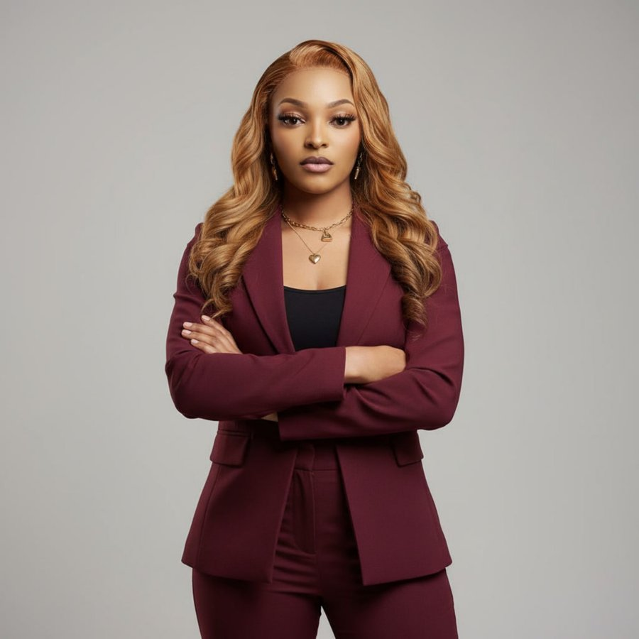
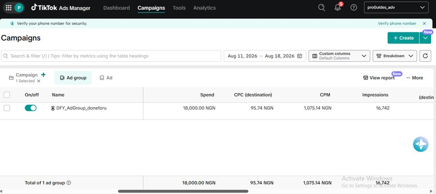
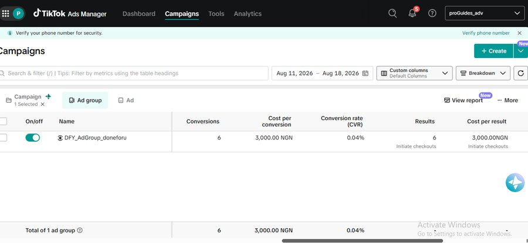
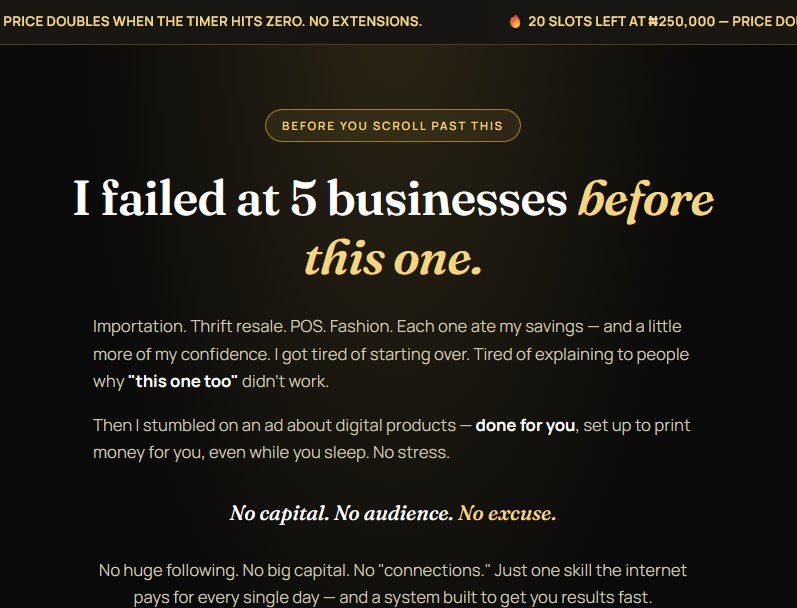
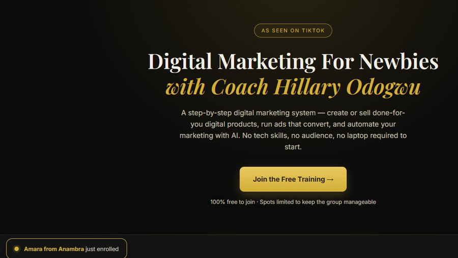
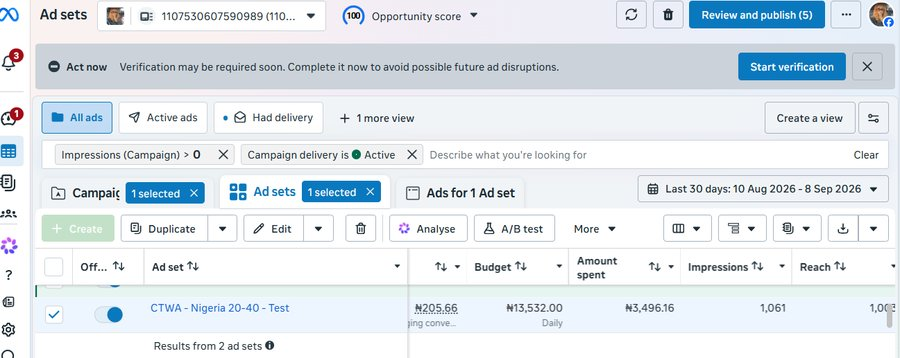
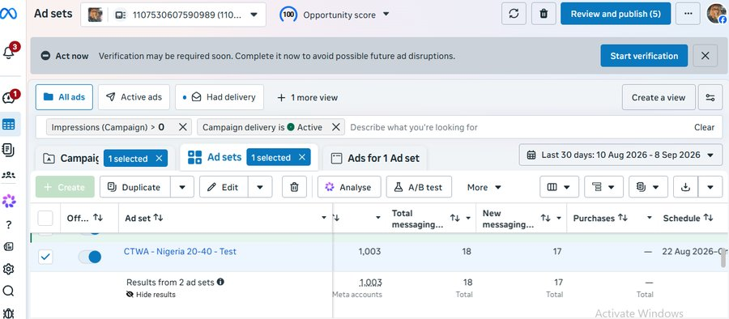
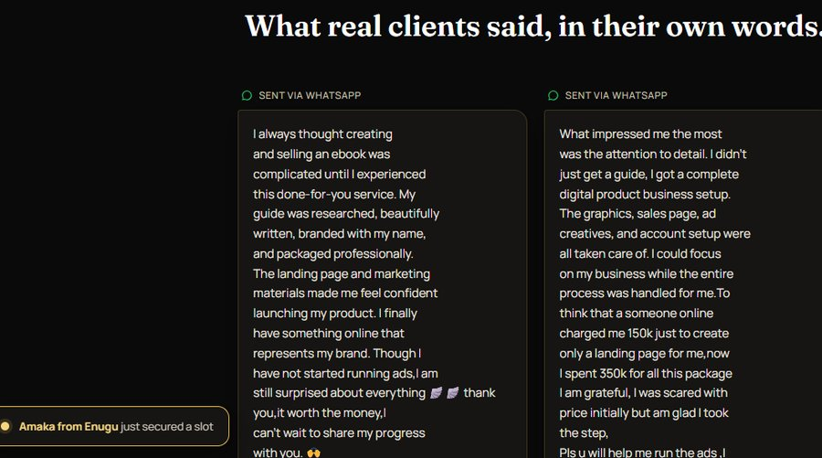
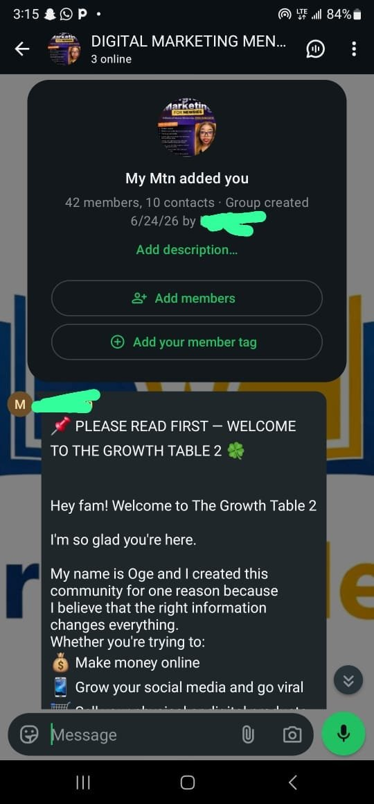

I plan, launch and optimise TikTok and Meta ad campaigns that move strangers from a scroll to a sale. These funnels are ones I designed, ran and paid for myself, so every number you see below is one I stood behind first.

I started in mass communication and found my way into paid media because I liked the part everyone else skips. The moment an ad either makes someone stop scrolling or it doesn't, and the honesty of a dashboard that won't let you pretend otherwise.
Most of what I know about running ads, I learned by spending my own money to find out. I've built and launched two full products from scratch, written the offers, set up the pixels, and watched the numbers come in in real time, the wins and the campaigns that needed fixing. That's given me something a lot of media buyers who've only ever managed someone else's budget don't have: I know exactly what it costs, in naira and in nerves, to turn a stranger into a customer.
Today I bring that same discipline to brands and creators who want their ad spend to answer to something real, a sale, a conversation, a signed up student, not just an impressions count.
Everything below is a piece of the same job: getting the right offer in front of the right person, and proving it worked.
Audience research, offer positioning, and full campaign builds on TikTok Ads Manager and Meta Ads Manager, from pixel installation to first launch.
Landing pages, WhatsApp delivery flows, and click-to-WhatsApp funnels that carry a cold visitor all the way to a conversation or a checkout.
Reading a dashboard for what it actually says, cost per result, drop off points, what to kill and what to scale, and reporting all of it in plain language.
Turning ad traffic into WhatsApp groups and webinar audiences that keep converting long after the ad spend stops.
Two campaigns I built and funded myself, from the offer and the ads to the funnel and the follow up.
I built and launched a done-for-you digital product offer, researched, branded and packaged for buyers with no tech skill of their own, then ran TikTok ads to sell it directly. In three weeks the offer had done 92 sales and over ₦3.3M in volume, backed by client testimonials and a 4.5-star rating. This campaign is also where I did my most honest diagnostic work: when I saw where the funnel was leaking, I mapped exactly where and why, ahead of a retest.




This is the fuller funnel story: a click-to-WhatsApp Meta campaign built to move cold traffic through a free training and into a WhatsApp community, then into a live webinar and a paid course. On a spend just under ₦3,500, the funnel carried people from first message to purchase, with a 69% group to webinar attendance rate along the way, well above what most funnels see at that step.




From buyers inside the Done-For-You product.
"I didn't just get a guide, I got a complete digital product business setup. The graphics, sales page, ad creatives and account setup were all taken care of. I could focus on my business while the entire process was handled for me."
"My guide was researched, beautifully written, branded with my name, and packaged professionally. The landing page and marketing materials made me feel confident launching my product. I finally have something online that represents my brand."
If you've got an offer and need someone to turn it into a campaign that pays for itself, I'd like to hear about it. I reply quickly and I'll tell you honestly if I think it'll work before we spend a single naira.